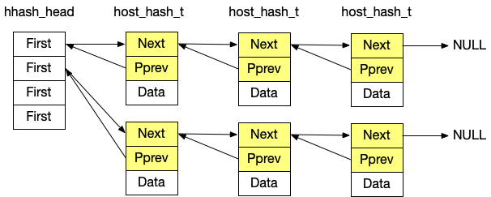
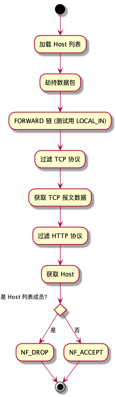

Table of Contents
1 需求
通过http协议的host字段实现阻断的功能
- 可配置1w个host，并实现host规则的管理（只考虑添加、删除即可）
- 针对网络中的流量进行匹配，如果命中配置的host的流量就阻断，否则放行
2 运行
- 环境：CentOS 7
- 配置：/etc/simple_nf.d/hostlist host 长度 <= 31 字节
运行：
cd src make insmod snf.ko清理：
make clean
卸载
rmmod snf
- 更新配置文件后需要 卸载后重新运行
3 项目说明
3.1 功能模块
- 维护 Host 列表（哈希表）
头文件结构
file.h#define HASH_MASK_BITS 0x3 /* & 0011 */ #define HOST_HASH_SIZE 4 struct hlist_nulls_head { struct hlist_nulls_node* first; }; struct hlist_nulls_node { struct hlist_nulls_node *next, **pprev; }; typedef struct host_hash_s host_hash_t; struct host_hash_s { struct hlist_nulls_node hnode; char* data; /* host list */ }; struct hlist_nulls_head* hhash_head;
- 结构图 
- hash 存储方案
- 将数据通过 MurmurHash 算法计算 hash 值
- 将上一步获取的 hash & HASH_MASK_BITS 后获取新的 hash 值
- 在 hhash_head[hash] 链查询数据是否已存在，未存在则添加到 hhash_head[hash] 链，否则放弃
- 流量拦截
- 通过 NetFilter 钩子实现拦截网络数据包
- 过滤 IP 包
- 过滤 TCP 协议
- 通过解TCP包过滤协议类型为 HTTP
- 提取包头获取 Host
- 判断 Host 是否在黑名单
- 对 Host 字段值计算 hash 后去相应入口查询
- 如有匹配项则丢弃包
- 否则放行
- 对 Host 字段值计算 hash 后去相应入口查询
3.2 流程图

3.3 部分 API 说明
- filter_init(void): 完成读取配置，注册网络钩子
- get_g_htable(): 申请内存，读取配置文件
- hit_http(): HTTP 协议匹配，非 HTTP 协议放行
- hit_host(): Host 命中时阻断
- filter_done(void): 退出前清理内存，注销钩子
3.4 关键数据结构
- linux/netfilter.h : struct nf_hook_ops
- linux/skbuff.h: struct sk_buff
- net/ip.h: struct iphdr
- net/tcp.h: struct tcphd
- << Linux Kernel Development >> : struct file
4 参考资料
- Linux netfilter Hacking HOWTO: Netfilter Architecture
- Linux内核：sk_buff解析 - 唐稚骅 - 博客园
- linux netfilter 五个钩子点 - codestacklinuxer - 博客园
- Iptables 指南 1.1.19
- c - How to get payload from struct sk_buff in netfilter kernel module linux - Stack Overflow
- c - Read/write files within a Linux kernel module - Stack Overflow
- Linux Filesystems API summary — The Linux Kernel documentation
- filp_open(9) [suse man page]
- Conntrack hash functions